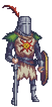

Genial!! Lo lograste. No podría esperar menos de alguien como tú.
Ahora notifica que ya terminaste, para que puedas conseguir tu premio
con base a tu puntuación!!. Procura no SALIR o RECARGAR la página, ya
que eso te hará perder tus monedas y ya no podrás volver a participar D:

Chetos... parece que no salió tan bien como esperabamos D:
Muestrale ésta pantalla a Juan, para que pueda darte un premio
equivalente a la cantidad de monedas que conseguiste :D.
Recuerda que... si SALES o RECARGAS la página, perderás tus
monedas :3. Así que... no lo haga compa